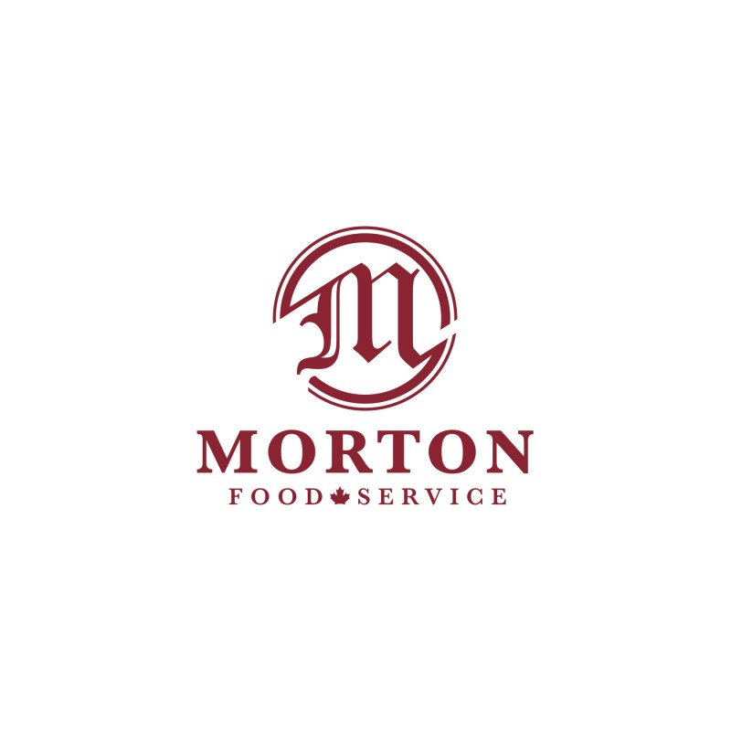

Morton Food Service
Our products and ingredients inspire. We pride ourselves on supplying our customers with a variety of locally grown and sourced products in addition to carrying specialty imported products and all the major national brands.
Our close relationship with our suppliers and partners helps to promote consistency in products, so you can trust that what you receive is of the finest quality and best value. Our product offering is designed to grow your business and delight your customers, whether you’re selling a burger or a fine dining experience.
For more information you can use this companies website
https://mortonfoodservice.com
